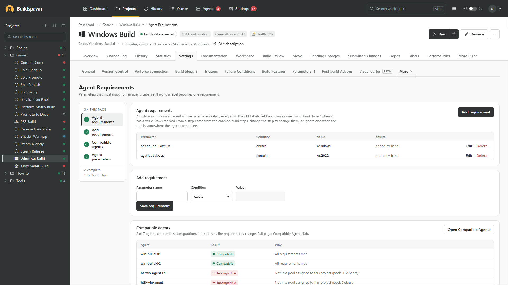

Labels and agent requirements
Labels and requirements decide which agent may run which build. A label is a tag you put on an agent. A requirement is a rule on a build configuration that an agent must meet, such as "Windows, at least 32 GB of memory, in the Unreal pool".
When to use it
Use a label when one word is enough: windows, ps5, gpu. Use a requirement when the rule is about a value that the agent reports, such as its operating system version, its free disk space, its name or its pool. Requirements need no tagging by hand. The agents report the values themselves.
Labels
A label is a word, or several words separated by spaces, in the agent's Labels field (see Agent settings). Example: windows unreal-5.4 gpu gives the agent three labels.
- A label can have any characters but spaces. Avoid
! & | < > ( ), because label expressions use them. - Every agent also has a label that is its own name. The built-in node has the label
built-in. - Labels need not be about the operating system. They can say what is installed:
vs2022,docker.
Label expressions
A build configuration can ask for agents with a label expression. The expression is true for an agent when its labels match.
| Write | Meaning | Example |
|---|---|---|
a | The agent has label a. | windows |
a && b | Both labels. | windows && gpu |
a || b | Either label. | ps5 || xbox |
!a | The agent does not have a. | !devkit |
( … ) | Group parts. | windows && (gpu || cpu-only) |
a -> b | If it has a, it must have b. | gpu -> vulkan |
a <-> b | It has both or neither. | ps5 <-> devkit |
A wrong expression is refused with That is not a label expression: …. An empty expression lets any agent run the build configuration.
Click a label on an agent's page to see its label page: which agents have it and which build configurations use it.
Agent requirements
Requirements are rules on parameters. Every build configuration has a page for them.
How to set it up
- Open the build configuration and click Settings.
- Open Agent Requirements. (Reading it needs permission to read the build configuration; changing it needs Configure.)
- Click Add to add a rule. Pick a parameter (the field offers all the parameters that agents report, and you can type your own name), a condition, and a value.
- Save the row. The page shows N of M agents can run this configuration and updates as you change the rules.
- To change the label expression, click Edit label expression on the row of kind label. The old Labels field shows as one such row.

A build runs only on an agent whose parameters satisfy every row. A build configuration has at most 100 rules. A rule that is already there is refused (This requirement is already there).
Conditions
| Condition | True when the agent's value… |
|---|---|
| exists | is there (the agent has the parameter). |
| does not exist | is not there. |
| equals, does not equal | is the same as, or different from, the value. |
| more than, no more than, less than, no less than | compares as numbers. The value must be a number (This condition compares numbers, and this is not one). |
| starts with, ends with, contains, does not contain | compares text. |
| matches, does not match | matches a regular expression, for example WIN-BUILD-0[1-4]. |
| version more than, version no more than, version less than, version no less than | compares as version numbers, so 10.0.9 is less than 10.0.10. |
Except for exists and does not exist, a condition needs a value (This condition needs a value).
Rules that come from build steps
Some build steps need a program on the agent's search path: for example a .NET step needs dotnet, a Docker step needs docker. These steps add rules by themselves. They show on the page as rows marked From a step (and inherited from a template when they come from one). You cannot delete them, because the step needs them. To remove one, change or disable the step. If the tool is on an agent in an unusual place, click Ignore on the row. Builds of the build configuration may then start on an agent without it, and fail there.
If no known agent meets a rule, the queue says No known agent meets this requirement, so builds will wait. For a waiting build, Requirement not met: NAME is missing or Requirement not met: … names the rule that kept an agent out.
Compatible agents
The Compatible Agents tab of the build configuration lists which agents can run it, and why each of the others cannot. Each agent's page has a similar list of the build configurations it can run.
Agent parameters
Each agent has a Parameters page: open the agent, then Parameters. It lists what the agent reported when it connected, grouped as Agent, System, Folders and Environment, then your custom parameters, then what the agent found on its search path (agent.tool.NAME, with agent.tool.NAME.version where cheap to read), then what plug-ins found (for example Unity Editors and Unreal Engines). An offline agent shows its last report with its age.
| Parameter | What it holds |
|---|---|
agent.name | Name of the agent. |
agent.labels | Labels of the agent, separated by spaces. |
agent.pool | Pool the agent is in. |
agent.type | permanent, cloud or personal. |
agent.owner | Owner of a personal machine. |
agent.executors | Number of executors. |
agent.hostname | Host name of the machine. |
agent.os.name | Operating system name. |
agent.os.family | windows, linux or macos. |
agent.os.version | Operating system version. |
agent.os.arch | Processor architecture. |
agent.cpu.count | Number of processors. |
agent.memory.total.mb | Total memory in MB. |
agent.java.version | Java version of the agent. |
agent.version | Agent program version. |
agent.work.dir | Work folder of the agent. |
agent.work.dir.free.mb | Free space of the work folder in MB. |
agent.home.dir | Folder the agent runs from. |
agent.temp.dir | Temporary folder of the agent. |
env.NAME | An environment variable that an administrator chose to show (see below). |
The same names work in build steps as %agent.name% (see Parameters), so a step can use the name of the agent it runs on.
Plug-ins can add parameters. The Unity and Unreal plug-ins report the editors and engines found on the agent, and a build configuration can require one.
Custom parameters
Add your own parameters in the agent's Custom parameters property (rack=a3). Use them for facts that Buildspawn cannot read, such as the devkit's SDK version. See Agent settings for the rules.
Exposed environment variables
An agent's environment variables are not shown by default. An administrator picks which ones appear as env.NAME parameters.
- Open Settings › System and find Agent environment variables (see System settings).
- In Variables to show, type one name per line, for example
UE_ROOTorVULKAN_SDK. - Click Save. Each name shows as
env.NAMEon every agent's Parameters page, and requirements can use it.
Nothing is shown unless it is listed. At most 50 names are allowed. A name has letters, digits and underscores and does not start with a digit. A name with password, passwd, secret, token, key or credential in it is refused, so a secret never becomes a parameter.
A worked example
The studio builds a Windows client of the game that needs an NVIDIA graphics card for shader tests, and it must run on one of the machines WIN-BUILD-01 to WIN-BUILD-04.
- On each of the four agents, set Labels to
windows gpu. - In Game / Windows Client, open Settings › Agent Requirements.
- Edit the label expression to
windows && gpu. - Add a rule:
agent.namematchesWIN-BUILD-0[1-4]. - Add a rule:
agent.memory.total.mbno less than32768. - Add a rule:
agent.poolequalsWindows.
The page now says 3 of 12 agents can run this configuration, or whatever your count is.
What you see when it runs
- The queue entry of a waiting build names the agents that were rejected and why, for example Requirement not met: agent.memory.total.mb or Not in a pool assigned to this project (pool: Linux).
- The build page names the agent the build ran on.
- A rule that no agent can meet is shown on the Agent Requirements page as No known agent meets this requirement, so builds will wait.
Problems and fixes
| Problem | What to do |
|---|---|
| A build waits and says no agent meets the requirement. | Open the Compatible Agents tab. Check the spelling of the label, and whether the agents are online and in a pool of the project. |
| That is not a label expression | Check &&, || and the brackets. |
| A numeric condition is refused. | The value is not a number. Use a regular expression or a text condition instead. |
| A rule "From a step" blocks every agent. | No agent has the tool on its search path. Install it, or use Ignore and point the step at the tool. |
An env.NAME parameter is missing. | Add the name under Agent environment variables in Settings. The agent reports it the next time it connects. |
| An offline agent shows old values. | It shows its last report with the age. It reads the values again when it connects. |